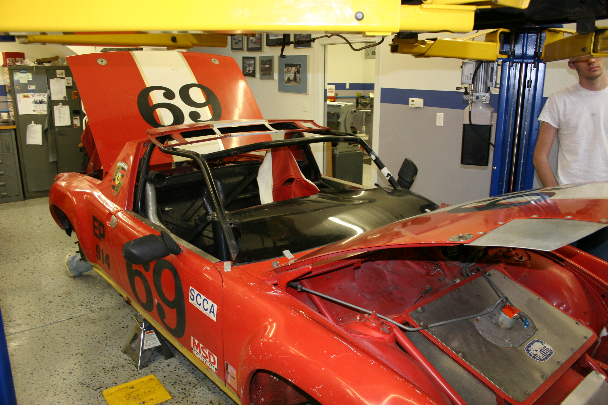

Facts and Info
We have 1974 Porsche 914 and is currently powered by a Mazda Series 5 (S5) 13B (turbo 2) out of an FC RX7. We've also installed a full rollcage and swapped out the susupension and brakes with 911 parts. The rollcage makes it quite difficult to get into and the clutch feels weird.
A Short History
The Porsche was donated to the club at the end of 2007. It was raced with the stock flat-four engine in the 1970s - 80s, it then sat in a barn for many years before being donated.

The Porsche when it was first donated to the team.